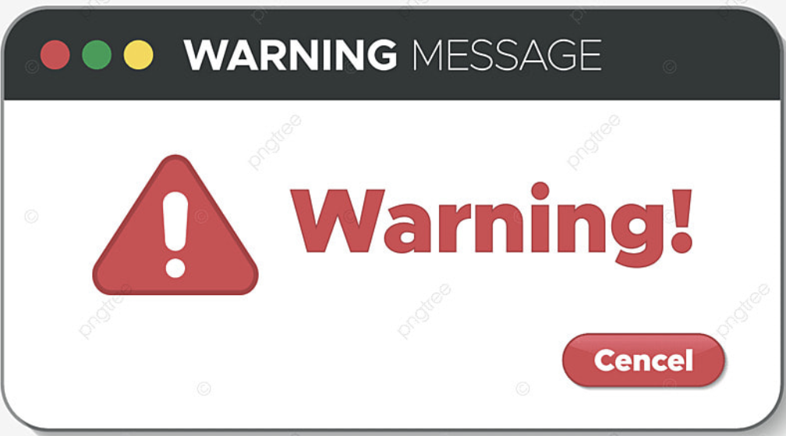

사이트 로고
오른쪽 영역
검색엔진이 좋아하는 웹페이지. 시맨틱 웹 웹문서를 구조화하여 의미있는 내용 탐색이 용이한 웹을 시맨택웹 semantic web이라고 하며 시맨틱 태그에는 header section article main summary mark time 등이 있다
122쪽 alert() 함수 활용
function f() alert("경고합니다");
실행 결과

123쪽 Question 1
웹 개발자가 알아야 할 언어 3가지?
Answer 1
HTML5, CSS, Javascript